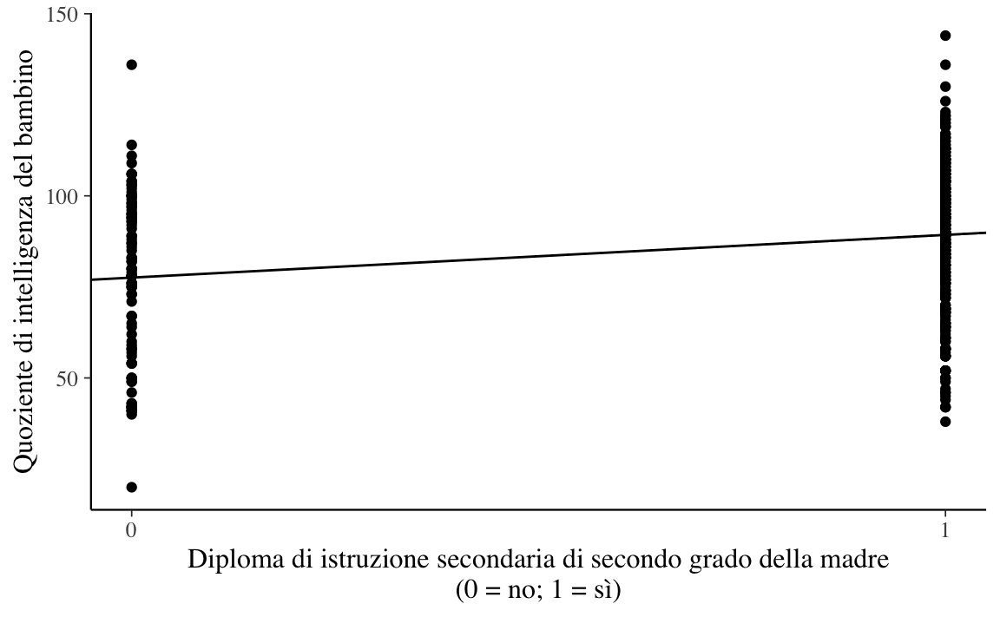

Capitolo 5 Confronto tra due gruppi indipendenti
Il problema del confronto tra due gruppi indipendenti può essere formulato nei termini di un modello lineare nel quale la variabile \(X\) è dicotomica, ovvero assume solo due valori.
5.1 Modello lineare con una variabile dicotomica
Se \(X\) è una variabile dicotomica con valori 0 e 1, allora per il modello lineare \(\mu_i = \alpha + \beta x_i\) abbiamo quanto segue. Quando \(x=0\), il modello diventa
\[ \mu_i = \alpha \] mentre, quando \(x=1\), il modello diventa
\[ \mu_i = \alpha + \beta. \]
Ciò significa che il parametro \(\alpha\) è uguale al valore atteso del gruppo codificato con \(X=0\) e il parametro \(\beta\) è uguale alla differenza tra le medie dei due gruppi (essendo la media del secondo gruppo uguale a \(\alpha + \beta\)). Il parametro \(\beta\), dunque, codifica l’effetto di una manipolazione sperimentale o di un trattamento, e l’inferenza su \(\beta\) corrisponde direttamente all’inferenza sull’efficacia di un trattamento o di un effetto sperimentale. L’inferenza su \(\beta\), dunque, viene utilizzata per capire quanto “credibile” può essere considerato l’effetto di un trattamento o di una manipolazione sperimentale.
5.1.1 Confronti, non effetti
Per “effetto di un trattamento” si intende la differenza tra le medie di due gruppi (per esempio, il gruppo “sperimentale” e il gruppo “di controllo”). Gelman, Hill, and Vehtari (2020) fanno notare come l’uso della terminologia “effetto” implica un modello causale: una variazione di \(X\) produce una variazione di \(Y\). In generale, il modello lineare descrive una regolarità osservabile nel campione di dati. Ma questa regolarità (ovvero, la presenza di una relazione approssimativamente lineare tra \(X\) e \(Y\)) non ci dice nulla della presenza (o dell’assenza) di una relazione di causa/effetto tra queste variabili. L’associazione osservata tra le variabili \(X\) e \(Y\) potrebbe dipendere dall’effetto di una o più altre variabili non misurate, senza che tra \(X\) e \(Y\) ci sia alcuna relazione causale. In tali circostanze, l’interpretazione più appropriata dei coefficienti del modello lineare è quella che ci porta a pensare ai coefficienti del modello come ai risultati di un confronto. Nel caso presente, il confronto è quello tra il valore atteso del quoziente di intelligenza dei bambini, quando la madre ha oppure non ha completato il ciclo di istruzione secondaria superiore. Dato che l’affermazione precedente è formulata nei termini del valore atteso, questo significa che facciamo riferimento ad un campione di osservazioni. Niente viene detto della relazione causale tra il quoziente di intelligenza del bambino e l’ottenimento del diploma di scuola superiore da parte della madre all’interno del singolo soggetto. Quindi, quando usiamo il termine “effetto” dobbiamo sempre pensare a tale termine come come se fosse contenuto tra virgolette.
5.1.2 Un esempio concreto
Esaminiamo nuovamente i dati kid_score discussi da Gelman, Hill, and Vehtari (2020). La domanda della ricerca è se il QI del figlio (misurato sulla scala PIAT) è associato al livello di istruzione della madre.
Codifichiamo il livello di istruzione della madre (\(x\)) con una variabile indicatrice (ovvero, una variabile che assume solo i valori 0 e 1) tale per cui:
- \(x=0\): la madre non ha completato la scuola secondaria di secondo grado (scuola media superiore);
- \(x=1\): la madre ha completato la scuola media superiore.
Supponiamo che i dati siano contenuti nel data.frame df.
library("rio")
df <- rio::import(here("data", "kidiq.dta"))Calcoliamo le statistiche descrittive per i due gruppi:
df %>%
group_by(mom_hs) %>%
summarise(
mean_kid_score = mean(kid_score),
std = sqrt(var(kid_score))
)
#> # A tibble: 2 × 3
#> mom_hs mean_kid_score std
#> <dbl> <dbl> <dbl>
#> 1 0 77.5 22.6
#> 2 1 89.3 19.0Il punteggio medio PIAT è pari a 77.5 per i bambini la cui madre non ha il diploma di scuola media superiore e pari a 89.3 per i bambini la cui madre ha completato la scuola media superiore. Questa differenza suggerisce un’associazione tra le variabili, ma tale differenza potrebbe essere soltanto la conseguenza della variabilità campionaria, senza riflettere una caratteristica generale della popolazione. Come possiamo usare il modello statistico lineare per fare inferenza sulla differenza osservata tra i due gruppi? Non dobbiamo fare nient’altro che usare il modello lineare che abbiamo definito in precedenza.
modelString = "
data {
int<lower=0> N;
vector[N] y;
vector[N] x;
}
transformed data {
vector[N] x_std;
vector[N] y_std;
x_std = (x - mean(x)) / sd(x);
y_std = (y - mean(y)) / sd(y);
}
parameters {
real alpha_std;
real beta_std;
real<lower=0> sigma_std;
}
model {
alpha_std ~ normal(0, 2);
beta_std ~ normal(0, 2);
sigma_std ~ cauchy(0, 2);
y_std ~ normal(alpha_std + beta_std * x_std, sigma_std);
}
generated quantities {
real alpha;
real beta;
real<lower=0> sigma;
real cohen_d;
alpha = sd(y) * (alpha_std - beta_std * mean(x) / sd(x))
+ mean(y);
beta = beta_std * sd(y) / sd(x);
sigma = sd(y) * sigma_std;
cohen_d = beta / sigma;
}
"
writeLines(modelString, con = "code/simpleregstd.stan")Come in precedenza, salviamo i dati in un oggetto di classe list:
data_list <- list(
N = length(df$kid_score),
y = df$kid_score,
x = df$mom_hs
)Compiliamo il modello:
file <- file.path("code", "simpleregstd.stan")
mod <- cmdstan_model(file)Adattiamo il modello ai dati:
fit <- mod$sample(
data = data_list,
iter_sampling = 4000L,
iter_warmup = 2000L,
seed = SEED,
chains = 4L,
parallel_chains = 2L,
refresh = 0,
thin = 1
)Creiamo un grafico con i valori predetti dal modello lineare:
stanfit <- rstan::read_stan_csv(fit$output_files())
posterior <- extract(stanfit)tibble(
kid_score = df$kid_score,
mom_hs = df$mom_hs
) %>%
ggplot(aes(mom_hs, kid_score)) +
geom_point() +
geom_abline(intercept = mean(posterior$alpha),
slope = mean(posterior$beta)) +
labs(
y = "Quoziente di intelligenza del bambino",
x = "Diploma di istruzione secondaria di secondo grado della madre\n(0 = no; 1 = sì)"
) +
scale_x_continuous(breaks=c(0, 1))
Le stime a posteriori dei parametri si ottengono con:
fit$summary(c("alpha", "beta", "sigma", "cohen_d"))
#> # A tibble: 4 × 10
#> variable mean median sd mad q5 q95 rhat ess_bulk ess_tail
#> <chr> <dbl> <dbl> <dbl> <dbl> <dbl> <dbl> <dbl> <dbl> <dbl>
#> 1 alpha 77.6 77.5 2.08 2.06 74.1 81.0 1.00 16538. 12192.
#> 2 beta 11.8 11.7 2.35 2.34 7.88 15.6 1.00 16718. 12319.
#> 3 sigma 19.9 19.9 0.676 0.671 18.8 21.0 1.00 15949. 10908.
#> 4 cohen_d 0.592 0.591 0.120 0.119 0.393 0.788 1.00 16771. 12647.I risultati confermano ciò che ci aspettavamo:
- il coefficiente \(\texttt{alpha} = 77.56\) corrisponde alla media del gruppo codificato con \(x = 0\), ovvero la media dei punteggi PIAT per i bambini la cui madre non ha completato la scuola media superiore;
- il coefficiente \(\texttt{beta} = 11.76\) corrisponde alla differenza tra le medie dei due gruppi, ovvero 89.32 - 77.55 = 11.77 (con piccoli errori di approssimazione).
La seguente chiamata ritorna l’intervallo di credibilità al 95% per tutti i parametri del modello:
rstantools::posterior_interval(
as.matrix(stanfit), prob = 0.95
)
#> 2.5% 97.5%
#> alpha_std -0.09401587 0.09248375
#> beta_std 0.14360650 0.32886135
#> sigma_std 0.91337438 1.04372000
#> alpha 73.43237000 81.62094500
#> beta 7.13510525 16.33961500
#> sigma 18.64258750 21.30290500
#> cohen_d 0.35667085 0.82770125
#> lp__ -208.90605000 -204.32400000Possiamo dunque concludere che i bambini la cui madre ha completato la scuola superiore ottengono in media circa 12 punti in più rispetto ai bambini la cui madre non ha completato la scuola superiore. L’intervallo di credibilità al 95% ci dice che possiamo essere sicuri al 95% che tale differenza sia di almeno 7 punti e possa arrivare fino a ben 16 punti. Per riassumere, possiamo concludere, con un grado di certezza soggettiva del 95%, che c’è un’associazione positiva tra il livello di scolarità della madre e l’intelligenza del bambino: le madri che hanno livello di istruzione più alto della media tendo ad avere bambini il cui QI è anch’esso più alto della media.
5.2 La dimensione dell’effetto
Nel caso di due gruppi indipendenti, la dimensione dell’effetto si può stimare con la statistica \(d\) di Cohen:
\[ d={\frac {{\bar {y}}_{1}-{\bar {y}}_{2}}{s}}. \]
Nel caso presente, la differenza \({\bar {y}}_{1}-{\bar {y}}_{2}\) corrisponde a al parametro \(\beta\) del modello lineare. Inoltre, una stima della deviazione starndard comune dei due gruppi è fornita dalla deviazione standard della regressione, ovvero dal parametro \(\sigma\). Nel blocco generated quantities del modello Stan ho calcolato cohen_d = beta / sigma. Ciò significa che Stan calcolerà la distribuzione a posteriori del parametro cohen_d. Possiamo dunque riassumere la distribuzione a posteriori di cohen_d con un qualche indice di tendenza centrale (che sarà la nostra stima della dimensione dell’effetto) e calcolare l’intervallo di credibilità, per esempio al 95%. Questi risultati si ottengono con l’istruzione riportata di seguito:
posterior::summarise_draws(
stanfit,
~ quantile(.x, probs = c(0.025, 0.5, 0.975))
)
#> # A tibble: 8 × 4
#> variable `2.5%` `50%` `97.5%`
#> <chr> <dbl> <dbl> <dbl>
#> 1 alpha_std -0.0940 -0.000366 0.0925
#> 2 beta_std 0.144 0.236 0.329
#> 3 sigma_std 0.913 0.974 1.04
#> 4 alpha 73.4 77.5 81.6
#> 5 beta 7.14 11.7 16.3
#> 6 sigma 18.6 19.9 21.3
#> 7 cohen_d 0.357 0.591 0.828
#> 8 lp__ -209. -205. -204.I risultati dell’analisi bayesiana coincidono con quelli che si ottengono utilizzando la formula del \(d\) di Cohen con le medie dei due gruppi e una stima della varianza pooled. Il calcolo della statistica \(d\) di Cohen è fornita, ad esempio, dal pacchetto effectsize:
library("effectsize")
(d <- cohens_d(kid_score ~ mom_hs, data = df))
#> Cohen's d | 95% CI
#> --------------------------
#> -0.59 | [-0.83, -0.36]
#>
#> - Estimated using pooled SD.Il fatto che l’output abbia un segno negativo dipende dal fatto che è stata sottratta la media maggiore dalla media minore (in altri termini, dobbiamo guardare il risultato in valore assoluto).
In conclusione, il valore \(d\) di Cohen di entità “media” [\(d\) > 0.5; Sawilowsky (2009)] può essere interpretato dicendo che la scolarità delle madri ha un’influenza non trascurabile sul QI dei bambini.
Commenti e considerazioni finali
La dimensione dell’effetto formulata nei termini dell’indice \(d\) di Cohen fornisce un indice che non dipende dall’unità di misura delle variabili, ovvero è una differenza media standardizzata. L’intrepretazione di \(d\) è semplice: la scala di \(d\) è la deviazione standard. Se, per esempio, \(d = 0.5\), allora la media di un primo gruppo è mezza deviazione standard più grande della media del secondo gruppo. In questo Capitolo abbiamo visto come \(d\) possa essere calcolato mediante un modello lineare bayesiano implementato in linguaggio Stan.